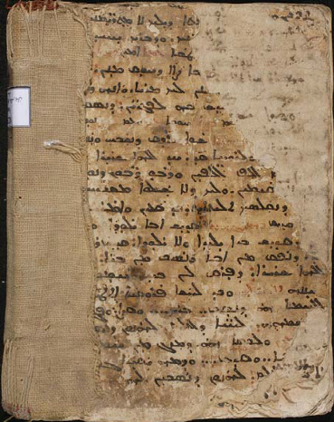

- Material: paper
- Date: approximately between 16-18th cent.
- Script type: Serto
- References: The images of this MS on vHMML
The binding of a Syriac Anaphora manuscript written in Syriac and in Garshuni (Turkish) from the Syrian Orthodox Archdiocese of Aleppo collection (St Ephrem Cathedral) is itself made from different fragments. The cover binding of SOAA 0232 (Z), includes a text which could be identified that it is from the Syriac Anaphora of Bar Salibi, which is one of the famous texts included in most of the Syriac Anaphoras manuscripts.
Transcription:
[ܟܗܢܐ ܘܐܦ ܠܟܠܢ ܒܪܟ ܒܒܘܪ̈]ܟܬܐ ܕܝܠܟ ܠܐ ܡܬܬܪ̈ܝܡܢ[ܝܬܐ܆ ܘܐܫܘܐ ܠܢ
ܠܡܥܒܕ ܨܒܝـ]ܢܟ ܘܕܒܪܟ ܝܚܝܕܝ[ܐ ܘܕܪܘܚܐ ܩܕܝܫܐ.
ܗܫܐ ܘܒܟܠܙܒܢ ܠܥܠܡܝܢ] ܥܡܐ ܐܡܝܢ.[ܨܠܘܬܐ ܕܦܪܣܐ
ܟܗܢܐ ܘܠܟܠ ܚܘܫ]ܒܐ ܨܐܐ ܕܚܘܩ ܡܢܢ [ܒܝܕ ܕܒܚܐ
ܗܢܐ ܕܡܩܪܒܝـ]ܢܢ ܠܟ ܡܪܝܐ. ܘܐܢܗܪ [ܒܗ ܠܢܦܫ̈ܬܢ
ܘܩ]ܕܫ ܒܗ ܠܦܓܪ̈ܝܢ܆ ܕܢܣܩ [ܠܟ ܫܘܒܚܐ..
ܡܫܡܫܢܐ ܢܩܘܡ] ܟܗܢܐ: ܚܘܒܐ ܥܡܐ: ܥܡ ܟܗܢܐ: ܢܘܕܐ
[ܡܫܡܫܢܐ: ܫܘܐ ܘܙܕܩ܀]
ܟܗܢܐ: ܫܘܐ ܘܙܕܩ. ܕܢܫܒܚ ܘܢـ[ܪܡܪܡ. ܥܒܘܕܐ
ܕܟܠܗܝܢ ܒܪ̈ܝܬܐ ܕܥܠܝ̈ܐ ܘܕܬܚܬܝ̈ܐ܀]
[ܟܗܢܐ: ܥܡ] ܐܠܦ ܐܠܦܝ̈ܢ ܘܪܒܘ ܪ̈ܒܘܢ ܕܢܘ[ܪ̈ܢܐ
ܕܩܕܡܝܟ] ܩܝܡܝܢ. ܘܠܟ ܕܠܐ ܫܠܘܐ ܡܫܒܚܝܢ. [ܢܫܬܘܐ]
ܕܢܩܠܣܟ ܬܠܝܬܐܝܬ. ܟܕ ܩܥܝܢܢ ܘܐܡܪ[ܝܢܢ]
ܩܕܝܫ ܟܗܢܐ ܓܗܢܬܐ ܩܕܝܫ ܐܒܐ ܝܠܘܕܐ [ܘܠܐ ܝܠܝܕܐ]:
ܩܕܝܫ ܒܪܐ ܝܠܝܕܐ ܘܠܐ ܝܠܘܕܐ܆ ܩܕܝܫ ܪ[ܘܚܐ ܩܕܝܫܐ]
ܕܢܦܩ ܡܢ ܐܒܐ ܘܢܤܒ ܡܢ ܒܪܐ܆ [ܚܕ]
ܐܠܗܐ ܫܪܝܪܐ ܕܦܪܩ ܠܢ ܒܝܕ ܪ̈ܚܡܘ[ܗܝ]
ܘܚܢܢܗ ܬܠܝܬܐ ܘܟܕ ܠܚܫܐ ܦܪܘܩܝܐ ܐܬ[ܛܝܒ.]
ܠܠܚܡܐ ܗܘ ܕܢܣܒ܀ ܒܪܟ ܀ ܘܩܨܐ܆ ܘܦܓܪ[ܗ ܩܕܝܫܐ]
ܫܡܗܘܢ ܠܚܝ̈ܐ ܕܠܥܠܡ ܠܗܢܘܢ ܕܢܣ[ܒܝܢ ܠܗ ܀]
ܐܡܝܢ ܘܠܟܤܐ ܗܘ ܕܡܙܓ ܡܢ ܚܡܪ[ܐ ܘܡܢ
ܡܝ̈ܐ. ܒܪܟ] ܘܩܿܪܲܫ ܀܀ ܘܕܡܗ ܝܩܝܪܐ ܓ[ܡܪܗ
ܠܚܝ̈ܐ ܕܠܥܠ]ܡ ܠܗܢܘܢ ܕܢܣܒܝܢ ܠܗ
Literature:
Ephrem Aboud Ishac, “Towards a Comprehensive Syriac Liturgical Corpus (Part I),” in Tracing Written Heritage in a Digital Age, ed. Ephrem Aboud Ishac, Thomas Csanády, and Theresa Zammit Lupi (Wiesbaden: Harrassowitz Verlag, 2021), 410.